03 PROCEDIMIENTO
Desarrollo de la práctica
A continuación, se presenta el procedimiento realizado para crear una
aplicación web con ASP.NET Core, configurar las dependencias necesarias
y establecer la conexión con una base de datos PostgreSQL alojada en
Neon. El proceso incluye la creación y configuración del proyecto,
instalación de Npgsql y Dapper, configuración de la conexión y
comprobación final mediante un endpoint que devuelve los registros
almacenados en la base de datos.
1
Creación y acceso a la carpeta de trabajo
Para comenzar la práctica, se accedió mediante la consola de Windows
a la carpeta de trabajo correspondiente al día de la práctica.
Esta carpeta se utilizó para almacenar el proyecto desarrollado
con ASP.NET Core.
cd C:\Windows\System32\Optativas1\7C\sep7
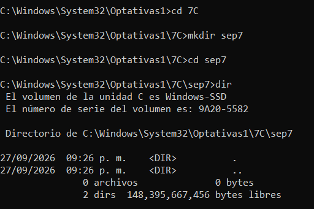
Figura 1. Acceso a la carpeta de trabajo sep7 desde la consola de Windows.
2
Creación del proyecto ASP.NET Core
Una vez ubicada la carpeta de trabajo, se creó un nuevo proyecto web
utilizando ASP.NET Core. Para ello se utilizó el comando
dotnet new web, indicando el nombre
webpgneon para el proyecto.
Al ejecutar el comando, .NET generó automáticamente la estructura
inicial del proyecto y realizó la restauración de los archivos
necesarios.
dotnet new web -o webpgneon
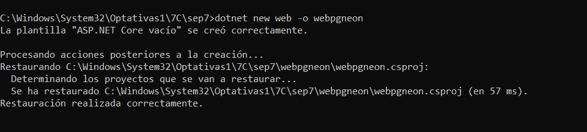
Figura 2. Creación del proyecto ASP.NET Core llamado webpgneon.
3
Acceso y verificación de la estructura del proyecto
Después de crear el proyecto, se accedió a la carpeta
webpgneon desde la consola de Windows. Posteriormente,
se utilizó el comando dir para verificar los archivos
y carpetas que fueron generados automáticamente por ASP.NET Core.
Entre los elementos principales se encontraron los archivos
Program.cs, appsettings.json y
webpgneon.csproj, además de las carpetas necesarias
para el funcionamiento del proyecto.
cd webpgneon
dir
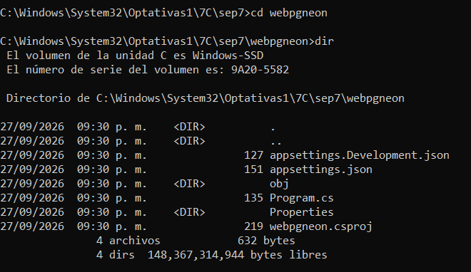
Figura 3. Verificación de los archivos y carpetas generados en el proyecto webpgneon.
4
Revisión de la configuración inicial del proyecto
Una vez verificada la estructura del proyecto, se revisaron los
principales archivos generados automáticamente por ASP.NET Core.
Esto permitió conocer la configuración inicial antes de realizar
las modificaciones necesarias para establecer la conexión con
PostgreSQL.
Primero se consultó el archivo appsettings.json,
el cual contiene configuraciones utilizadas por la aplicación.
type appsettings.json
También se revisó el archivo webpgneon.csproj,
donde se encuentra la configuración del proyecto y la versión
de .NET utilizada.
type webpgneon.csproj
Finalmente, se consultó Program.cs, que inicialmente
contenía la configuración básica de la aplicación y un endpoint
que devolvía el mensaje Hello World!.
type Program.cs

Figura 4. Revisión de los archivos de configuración inicial del proyecto ASP.NET Core.
5
Compilación y primera ejecución del proyecto
Después de revisar los archivos iniciales, se realizó una compilación
del proyecto para comprobar que la aplicación no presentara errores.
Para ello se utilizó el comando dotnet build.
dotnet build
La compilación terminó correctamente, sin advertencias ni errores.
Posteriormente, se ejecutó la aplicación mediante el comando
dotnet run.
dotnet run
ASP.NET Core inició el servidor web local y proporcionó una dirección
de acceso. Al abrirla desde el navegador se mostró el mensaje
Hello World!, confirmando que el proyecto funcionaba
correctamente antes de realizar la conexión con la base de datos.

Figura 5. Compilación y ejecución inicial del proyecto ASP.NET Core.
6
Instalación del paquete Npgsql
Para establecer la comunicación entre la aplicación ASP.NET Core
y la base de datos PostgreSQL, se instaló el paquete
Npgsql. Este paquete proporciona el controlador
necesario para realizar conexiones con PostgreSQL desde aplicaciones
desarrolladas en .NET.
La instalación se realizó desde la consola, dentro de la carpeta
del proyecto, utilizando el siguiente comando:
dotnet add package Npgsql
Al finalizar el proceso, el paquete fue agregado como una dependencia
del proyecto y se realizó automáticamente la restauración de los
archivos necesarios.
Posteriormente, se verificó el archivo
webpgneon.csproj para comprobar que la referencia
de Npgsql se hubiera agregado correctamente.
type webpgneon.csproj
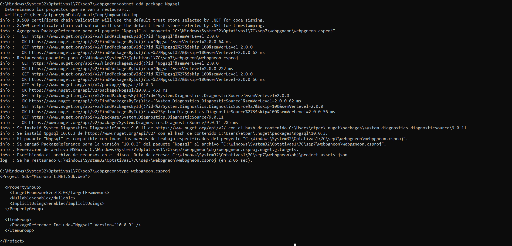
Figura 6. Instalación y verificación del paquete Npgsql en el proyecto ASP.NET Core.
7
Instalación del paquete Dapper
Después de instalar Npgsql, se agregó el paquete
Dapper al proyecto. Esta biblioteca permite
ejecutar consultas SQL desde una aplicación .NET y facilita
la conversión de los resultados obtenidos desde la base de datos
en objetos de C#.
La instalación se realizó desde la consola mediante el siguiente
comando:
dotnet add package Dapper
Una vez finalizada la instalación, se verificó nuevamente el archivo
webpgneon.csproj para comprobar que tanto
Dapper como Npgsql estuvieran
registrados como dependencias del proyecto.
type webpgneon.csproj
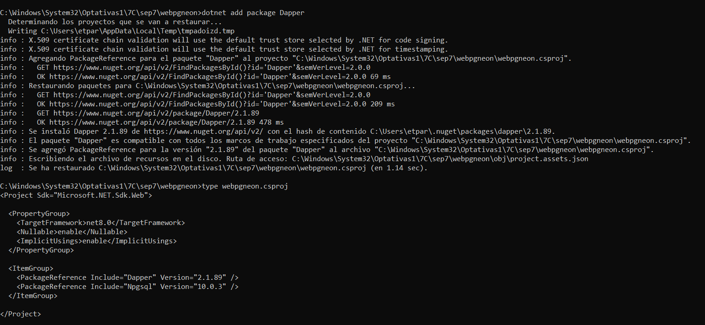
Figura 7. Instalación del paquete Dapper y verificación de las
dependencias del proyecto.
8
Apertura del proyecto en Visual Studio Code
Después de instalar las dependencias necesarias, se abrió la carpeta
del proyecto webpgneon en Visual Studio Code para
continuar con la configuración de la aplicación.
Desde el editor se identificaron los archivos principales que serían
modificados durante la práctica, especialmente
Program.cs y appsettings.json.
En Program.cs se realizaría la configuración de
Npgsql y Dapper, además de la creación del endpoint encargado de
consultar los usuarios. Por otra parte, en
appsettings.json se configuraría posteriormente
la cadena de conexión hacia PostgreSQL en Neon.
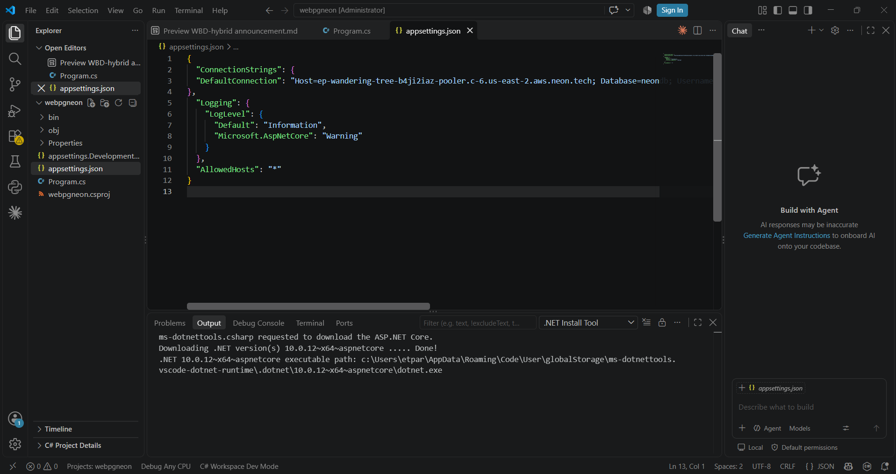
Figura 8. Proyecto webpgneon abierto en Visual Studio Code para
realizar la configuración de la aplicación.
9
Importación de Npgsql y Dapper en Program.cs
Con el proyecto abierto en Visual Studio Code, se comenzó a modificar
el archivo Program.cs. Primero se agregaron las
instrucciones necesarias para utilizar las bibliotecas
Npgsql y Dapper dentro de la
aplicación.
Npgsql se utilizaría para establecer la conexión con PostgreSQL,
mientras que Dapper permitiría ejecutar las consultas SQL y trabajar
con los resultados obtenidos desde la base de datos.
Al inicio del archivo Program.cs se agregaron las
siguientes líneas:
using Npgsql;
using Dapper;
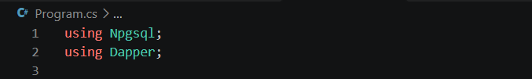
Figura 9. Importación de las bibliotecas Npgsql y Dapper en el
archivo Program.cs.
10
Configuración de la conexión en Program.cs
Después de importar las bibliotecas necesarias, se realizó la
configuración de la conexión con PostgreSQL dentro del archivo
Program.cs.
Primero se indicó que la aplicación obtuviera la cadena de conexión
denominada DefaultConnection desde el archivo
appsettings.json. De esta manera, los datos de
conexión no tienen que escribirse directamente en la lógica principal
de la aplicación.
var builder = WebApplication.CreateBuilder(args);
// Obtener la cadena de conexión del archivo appsettings.json
string cadConexion = builder.Configuration.GetConnectionString("DefaultConnection")!;
Posteriormente, se registró NpgsqlConnection como
un servicio de la aplicación. La conexión utiliza la cadena obtenida
anteriormente y podrá ser utilizada posteriormente por el endpoint
encargado de consultar la base de datos.
// Registrar la conexión como un servicio
builder.Services.AddTransient(sp => new NpgsqlConnection(cadConexion));
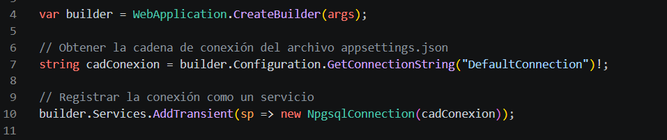
Figura 10. Configuración de la cadena de conexión y registro de
NpgsqlConnection en el archivo Program.cs.
11
Configuración de CORS
Después de registrar la conexión con PostgreSQL, se agregó la
configuración de CORS en la aplicación. Esta
configuración permite definir qué solicitudes externas pueden
acceder a los recursos proporcionados por la aplicación web.
Para esta práctica se estableció una política que permite solicitudes
desde cualquier origen, utilizando cualquier método HTTP y cualquier
encabezado.
builder.Services.AddCors(options => {
options.AddDefaultPolicy(policy =>
policy.AllowAnyOrigin().AllowAnyMethod().AllowAnyHeader());
});
Esta configuración se realizó antes de construir la aplicación con
builder.Build(), dejando preparada la política CORS
para utilizarla posteriormente durante la ejecución.
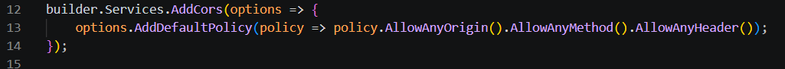
Figura 11. Configuración de la política CORS dentro del archivo
Program.cs.
12
Configuración de la conexión con Neon en appsettings.json
Una vez preparada la aplicación para utilizar Npgsql, se modificó
el archivo appsettings.json para agregar la cadena
de conexión correspondiente a la base de datos PostgreSQL alojada
en Neon.
Dentro del archivo se agregó la sección
ConnectionStrings y se creó una conexión denominada
DefaultConnection. Este nombre corresponde al mismo
que se utilizó anteriormente en Program.cs.
"ConnectionStrings": {
"DefaultConnection": "Host=SERVIDOR_NEON;Database=neondb;Username=neondb_owner;Password=********;SSL Mode=Require"
}
La cadena contiene la información necesaria para identificar el
servidor, la base de datos y el usuario de PostgreSQL. También se
indicó el uso de una conexión segura mediante SSL.
Por seguridad, la contraseña utilizada para acceder a la base de
datos se mantiene oculta en la documentación y en las capturas
utilizadas como evidencia.
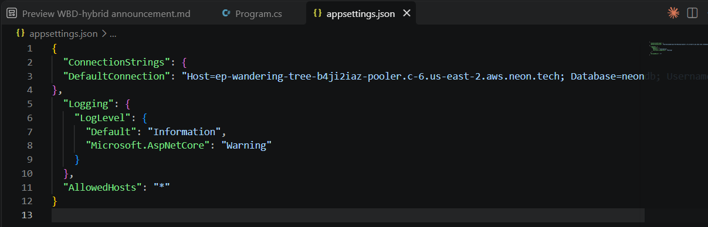
Figura 12. Configuración de la cadena de conexión hacia la base
de datos PostgreSQL alojada en Neon.
13
Creación del endpoint para consultar usuarios
Después de configurar la conexión con la base de datos, se creó un
nuevo endpoint denominado /usuario dentro del archivo
Program.cs. Este endpoint se encarga de consultar
los registros almacenados en la tabla usuarios.
Para realizar la consulta se utilizó Dapper junto
con la conexión proporcionada por Npgsql. La
instrucción SQL selecciona el identificador, nombre, correo
electrónico y fecha de creación de cada usuario.
app.MapGet(
"/usuario",
async (NpgsqlConnection con) => {
const string sql = "SELECT id, nombre, email, creado_en AS CreadoEn FROM usuarios";
var usuarios = await con.QueryAsync<Usuario>(sql);
return Results.Ok(usuarios);
}
);
Mediante QueryAsync, Dapper ejecuta la consulta de
forma asíncrona y convierte los registros obtenidos en objetos de
tipo Usuario. Finalmente, mediante
Results.Ok() se devuelve la información obtenida
como respuesta del endpoint.
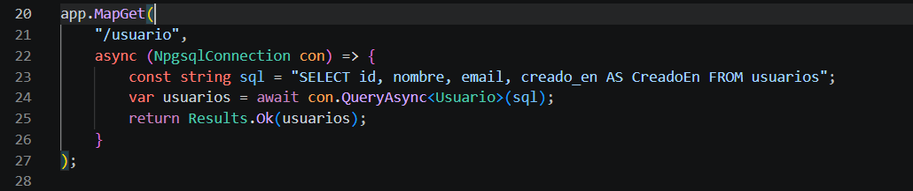
Figura 13. Creación del endpoint /usuario y consulta de la tabla
usuarios mediante Dapper.
14
Creación del modelo Usuario y activación de CORS
Para representar los registros obtenidos desde la tabla
usuarios, se creó un modelo denominado
Usuario. Este modelo contiene las propiedades
correspondientes al identificador, nombre, correo electrónico
y fecha de creación de cada registro.
public record Usuario(int Id, string Nombre, string Email, DateTime CreadoEn);
También se activó la política CORS configurada anteriormente mediante
el método UseCors(). Finalmente, se utilizó
app.Run() para iniciar la aplicación y permitir
que el servidor atienda las solicitudes recibidas.
app.UseCors();
app.Run();
Con estas instrucciones quedó completada la configuración principal
de la aplicación. El modelo Usuario permite que
Dapper relacione los datos obtenidos de PostgreSQL con una estructura
definida en C#.
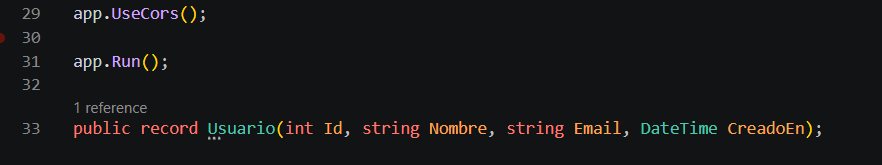
Figura 14. Creación del modelo Usuario y activación de CORS
dentro del archivo Program.cs.
15
Ejecución de la aplicación ASP.NET Core
Una vez terminada la configuración de la aplicación, se guardaron
los cambios realizados en los archivos del proyecto y se regresó
a la consola para ejecutar nuevamente la aplicación.
Para iniciar el servidor de ASP.NET Core se utilizó el siguiente
comando:
dotnet run
Al ejecutar el comando, ASP.NET Core compiló e inició la aplicación
correctamente. La consola indicó la dirección local en la que se
encontraba disponible el servidor web.
http://localhost:5291
La aplicación quedó en ejecución y preparada para recibir solicitudes.
Con esto fue posible realizar la comprobación final del endpoint
creado para consultar la información almacenada en PostgreSQL.
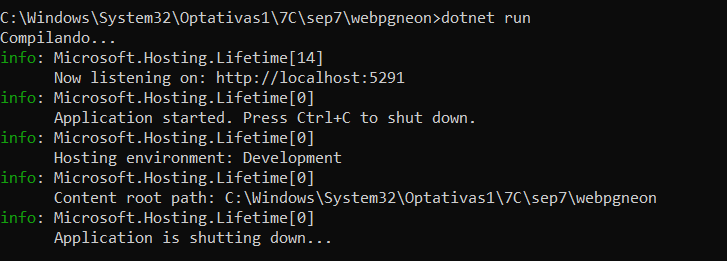
Figura 15. Ejecución de la aplicación ASP.NET Core mediante
el comando dotnet run.
16
Comprobación del endpoint /usuario
Con la aplicación en ejecución, se abrió el navegador web para
comprobar el funcionamiento del endpoint creado anteriormente.
Para ello, se agregó la ruta /usuario a la
dirección local proporcionada por ASP.NET Core.
http://localhost:5291/usuario
Al acceder a esta dirección, la aplicación ejecutó la consulta SQL
mediante Dapper y obtuvo los registros almacenados en la tabla
usuarios de la base de datos PostgreSQL alojada
en Neon.
Como resultado, el navegador mostró la información de los usuarios
en formato JSON, incluyendo su identificador,
nombre, correo electrónico y fecha de creación.
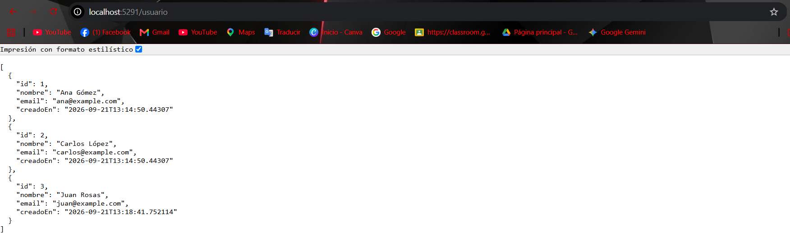
Figura 16. Registros obtenidos desde PostgreSQL mediante el
endpoint /usuario y mostrados en formato JSON.
17
Resultado final de la práctica
Como resultado final, se obtuvo una aplicación web desarrollada con
ASP.NET Core y C# capaz de establecer comunicación
con una base de datos PostgreSQL alojada en Neon.
La conexión se realizó mediante Npgsql, mientras que
Dapper se utilizó para ejecutar la consulta SQL y
convertir los registros obtenidos en objetos de tipo
Usuario.
El endpoint /usuario permitió recuperar correctamente
los registros almacenados en la tabla usuarios y
devolverlos en formato JSON. Con esta prueba se comprobó el
funcionamiento de la conexión entre la aplicación ASP.NET Core
y PostgreSQL en Neon.
Figura 17. Resultado final de la aplicación mostrando los
registros obtenidos desde PostgreSQL en Neon.
↑ Volver al índice
Página 4